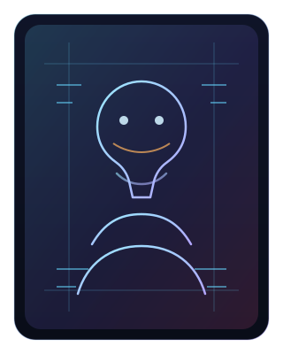

Operator Dossier
TAANB / systems-first gameplay builder
Former console RPG tinkerer turned systems developer. I focus on clean gameplay logic, support tooling, and technical communication that scales with the project.
- Class / RoleC# Gameplay Programmer
- SpecializationUnity systems / tools / technical writing
- Current deploymentOpen to opportunities
- Primary loadoutC#, Unity, .NET, Git
- Portfolio signalResume and project dossiers available